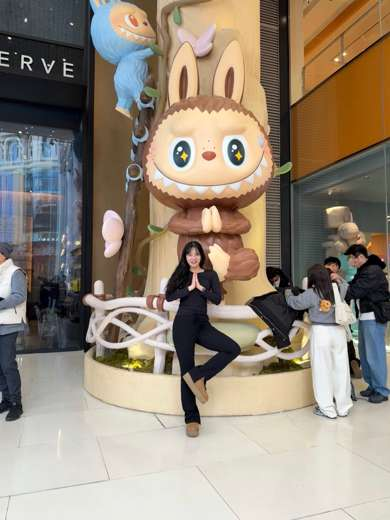

M.S. Student in Culture Technology Social Computing & Human–AI Interaction
I'm a master's student in Culture Technology at KAIST, where I study human behavior and social interactions in digital environments. With a background in developmental psychology, I'm interested in how people engage with technology, how digital platforms shape their experiences, and how these interactions influence the way we live and connect with others. My research draws on social computing, human–computer interaction, and computational approaches to understanding online behavior.
Social Computing Lab, Graduate School of Culture Technology, KAIST Advisor: Prof. Wonjae Lee

Research Interests01
Social Computing
Human–Computer Interaction
Digital Media
Online Social Behavior
Human–AI Interaction
Computational Social Science
Research Motto02
What are we leaving behind?
I study how human behavior and technology shape the digital environments we share, often in ways we never intended. Through understanding these interactions and their consequences, I hope to help build a safer, more thoughtful digital world for those who grow up in it.
Currently03
Investigating social judgment and evaluation in short-form video discourse
Developing computational approaches to analyzing large-scale online conversations
Exploring the intersection of social psychology, digital media, and HCI
Education
Sep. 2025 – Present
KAIST
M.S. in Culture Technology (In Progress)
Graduate School of Culture Technology · Social Computing Lab Advisor: Prof. Wonjae Lee
Mar. 2023 – Aug. 2025
Yonsei University
M.A. in Child & Family Studies
Mar. 2019 – Feb. 2023
Yonsei University
B.A. in Korean Language and Literature & Digital Arts
Selected Research
Work in Progress 2026 – Present
Person-Directed Stance in YouTube Shorts
Investigating how people express attitudes toward individuals in short-form video discourse, using computational methods to examine large-scale online interactions.
Online Discourse
Short-form Video
Computational Social Science
Conference Presentation · Accepted 2026
Children as Targets of Evaluation and Child Category as an Evaluative Standard
Development and Application of a Relation-Based Coding Scheme for Korean Online Discourse
Developing a relation-based coding framework to distinguish expressions that directly evaluate children from those that use children as a standard for evaluating others.
Digital Discourse
Child-Related Language
Measurement
Publications
Journal Articles
Ha, H., & Kang, M. J. (2025). The influence of socially prescribed perfectionism on problematic internet use in university students: The sequential mediating effect of fear of negative evaluation and academic procrastination. Human Ecology Research, 63(4), 513–526.
Lee, H. J., Ha, H., Cui, Y. M., Lee, J. H., & Kang, M. J. (2024). Proposal for a cognitive reconstruction program for female college students experiencing body dissatisfaction. Human Ecology Research, 62(2), 369–384.
하혜린, 강민주. (2025, May). 대학생의 사회부과 완벽주의가 문제성 인터넷 사용에 미치는 영향: 부정적 평가에 대한 두려움과 학업지연행동의 순차적 매개효과. 2025 대한가정학회 춘계학술대회, 서울, 대한민국.
Children as Targets of Evaluation and Child Category as an Evaluative Standard: Development and Application of a Relation-Based Coding Scheme for Korean Online Discourse. (2026). 2026 Korean Association of Child Studies Fall Conference (accepted).